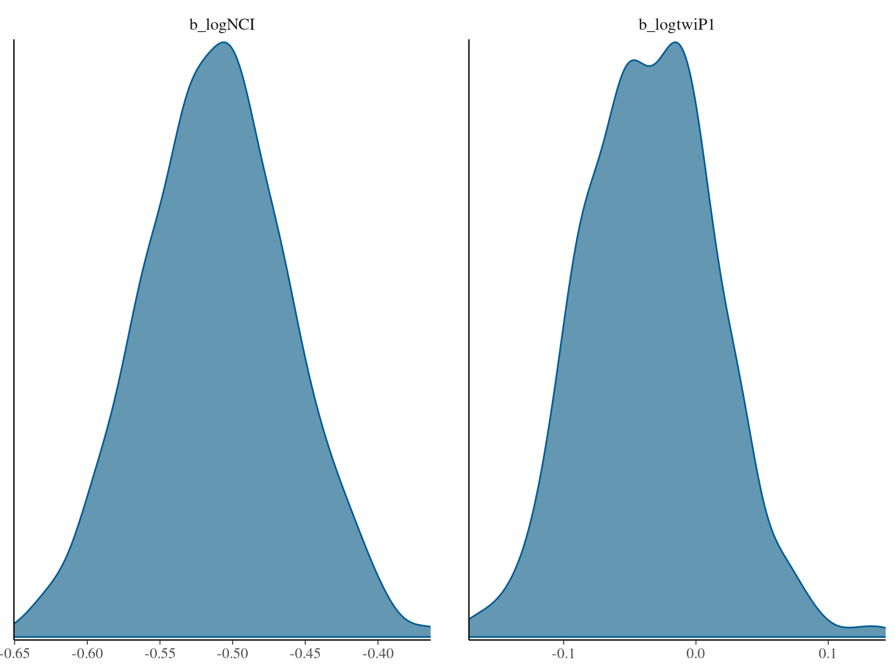

This book is in Open Review. I want your feedback to make the book better for you and other readers. To add your annotation, select some text and then click the on the pop-up menu. To see the annotations of others, click the in the upper right hand corner of the page
Chapter 6 Analyses
In this chapter we …
| log(gmax) | |||
|---|---|---|---|
| Predictors | Estimates | CI | p |
| (Intercept) | 0.37 | -0.39 – 1.12 | 0.339 |
| NCI [log] | -0.09 | -0.18 – 0.00 | 0.055 |
| twi + 1 [log] | -0.02 | -0.10 – 0.06 | 0.611 |
| Random Effects | |||
| σ2 | 0.24 | ||
| τ00 species:(Genus:Family) | 0.03 | ||
| τ00 Genus:Family | 0.02 | ||
| τ00 Family | 0.03 | ||
| N species | 208 | ||
| N Genus | 124 | ||
| N Family | 43 | ||
| Observations | 1714 | ||
| Marginal R2 / Conditional R2 | 0.002 / 0.244 | ||



| parameter | variable | pvalue | stat |
|---|---|---|---|
| dopt | Cmean | 0.001 | NA |
| dopt | I | 0.001 | NA |
| dopt | K | 0.001 | NA |
| dopt | K.star | 0.001 | NA |
| dopt | Lambda | NA | 0.9999504 |
| gmax | Cmean | 0.001 | NA |
| gmax | I | 0.001 | NA |
| gmax | K | 0.001 | NA |
| gmax | K.star | 0.001 | NA |
| gmax | Lambda | NA | 0.9999504 |
| ks | Cmean | 0.001 | NA |
| ks | I | 0.001 | NA |
| ks | K | 0.001 | NA |
| ks | K.star | 0.001 | NA |
| ks | Lambda | NA | 0.9999504 |